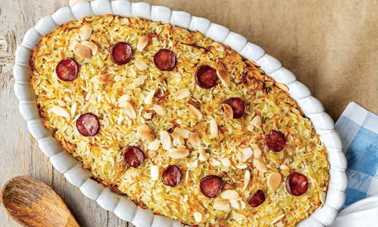

Cozido a Portuguesa
Ingredients:
- pork ribs 300g
- chicken 1.2kg
- pig snout 250g
- salt 3 tbsp.
- savoy cabbage 1.3kg
- portuguese cabbage 700g
- carrots 500g
- turnips 390g
- potatos 750g
- meat chorizo 1
- blood chorizo 1
- onion 100g
- garlic 2 psc
- olive oil
- rice 500g
Steps:
- Season the meat the day before with salt.
- In a pan with water, place the spare ribs, chicken and pork snout. These meats are removed as they cook. If you have a pressure cooker, the cooking is faster.
- Then, introduce the arranged and peeled vegetables into the meat cooking water and let it cook.
- Prick the chorizos with a fork and cook them in a pan with boiling water for about 7 minutes.
- For the rice, peel and chop the onion and crush the garlic and brown it lightly in the oil in a clay pot that can go in the oven.
- Remove the garlic as soon as it starts to brown. Add the rice to the stew after it has been well washed and drained and let it fry, without browning, until it absorbs the fat. Season with salt.
- Drizzle the rice with the broth where the meat and vegetables were cooked. The broth should be twice the volume of the rice. Let it boil and put the pan in the oven until the rice is dry.
- Before serving, cut the meats and arrange them on a platter, as well as the vegetables.
- Serve the stew with the rice.
Duck rice

Ingredients:
- olive oil
- onion 100g
- vegetables mix 400g
- salt 2 tbsp.
- rice 300g
- water 300ml
- shredded duck 600g
- chorizo 100g
- sliced almond 1 tbsp.
Steps:
- Preheat the oven to 200°C.
- Pour the oil into a wide and low pan that can go in the oven. Add the chopped onion, the vegetable mixture and season with salt. Cover and let sweat over moderate heat for about 5 minutes.
- Add the rice and mix well. Add the boiling water and the broth from the duck cooking, reserving the meat. Stir, cover and cook for 15 minutes.
- Meanwhile, cut the chorizo into slices.
- Mix the reserved shredded duck with the rice. Place the mixture on an oven tray and place the chorizo slices on top.
- Sprinkle with almonds and bake in the oven for 10 minutes.